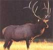
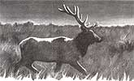

The good, the badand the misunderstood.
I top the ridge at first light and stop to catch my breath. Almost at once I glimpse movement on a ridge running parallel to mine, a hundred yards or so across a shallow draw. Through binoculars, in the soft amber light of dawn, I count the shadowy forms of a dozen elk trailing along in single file, fully exposed but only a jump away from the protection of the dark forest. At the rear of
the procession marches a big bull with large, well-formed antlers. Beautiful. He is herding a harem of 11 plump cows.
I hunker down in a tangle of knee-high Gambel oak and glass the bull and the terrain separating us. No way, I figure, that I can sneak across the open draw to within bow and arrow range-40 yards at the extreme-without being spotted. Better to lure the bull to me. If I can.
I pull a small, horseshoe-shaped neoprene disk from a pocket of my camouflaged jacket, place it against the roof of my mouth, hold it there with my tongue, inhale and let go with a humble but heartfelt imitation of a bugling bull elk.
The big bull's reaction is immediate and violent; the magic is working (it doesn't always). This is the height of the rut, the annual breeding season, and my imitation bugle has duped this monarch into believing I'm a rival bull after his harem. He barks (yes, barks) and lurches at his cows, sending them crashing off into the protection of the forest. Now he stares my way. Unable to spot my camouflaged form crouching low amongst the brush, he vents his anger on a handy pine sapling, slashing at the little tree with his massive antlers, gouging out big chunks of bark and shearing off limbs with each violent toss of his big black head. The racket generated by this tantrum is considerable, a threat meant for me.
Answering in kind, I pick up a fist-sized rock and bang and rake it against the base of the nearest bush. That does it. The bull stamps, gives the denuded sapling a parting slap and plunges off the ridge and down into the draw that separates us, quickly dropping below my line of sight. To keep him hot, I bugle again.
The bull reappears, now on my side and closing the furlongs between us like a quarter horse. Just when I begin to think he's going to run me over, he pulls up short behind a juniper. Through the needles of the scruffy tree I can see only a few buff patches of hide and an occasional flash of polished antler. The bull would expect to have spotted his challenger by now. Not having done so, he's growing suspicious. To reassure him, I bugle again, at the same time inching my recurve bow back to full draw. Easy does it.
The bull snorts, stamps and paws the ground, then steps defiantly out from behind the juniper . . . and stands there, little more than 20 yards distant, quartering on, not quite broadside, staring directly at me. I hesitate. This is something to see: His neck is dark and rut-swollen, his eyes rolled back and visibly bloodshot, his teeth gnashing, the heaves and falls of his chest highlighting thick ribs.
I've spent a month of weekends prowling these hills and woods, and the moment finally is at hand. I concentrate on a spot low and just behind the front shoulder. When I relax the three fingers holding the string, the bow snaps to.
The arrow sizzles audibly as it flashes away. The elk whirls and runs, as I knew he would. He'll feel little pain and won't go far if not pushed. I try to calm myself for the hard job of waiting, at least half an hour, an hour would be better, to allow the animal time to lie down and die in peace.
"There is blood on the ground where the elk has stood, blood on the nearby juniper .... As always at times like this, I shake my head and wonder: What have I done?"
Then I'll take up the blood trail.
Blood.
There's blood on the ground where the elk had stood, blood on the nearby juniper, blood staining the sere autumn grass with bright crimson splotches. As always at times like this, I shake my head and wonder: What have I done? Of course, I know perfectly well what I've done.
Even so, I always feel a certain sadness after making a kill, a moment of predator prey compassion, though not quite regret. While waiting for the long minutes to pass, I lie back on the cool earth and strain to recall a passage from an essay called "Heart of the Game," by Thomas McGuane. Having just killed and eviscerated a pronghorn, McGuane reflects: "I was blood from the elbows down and the antelope's eyes had skinned over. I thought, this is goddamned serious and you had better always remember that." I always have. I always will. McGuane continues: "Nobody who loves to hunt feels absolutely hunky-dory when the quarry goes down. The remorse spins out almost before anything, and the balancing act ends on one declination or another.
I decided that unless I became a vegetarian, I'd get my meat by hunting for it. I feel absolutely unabashed by the arguments of other carnivores who get their meat in plastic with blue numbers on it. I've seen slaughterhouses, and anyway, as Sitting Bull said, when the buffalo are gone, we will hunt mice, for we are hunters and we want our freedom.
" That is why I'm here today, and that is why I will return: I am a hunter and I want my freedom. Freedom, that is, from the plastic wrapped euphemisms of civilized life. Freedom from crowds of hurried, harried humans. Freedom, at least for the nonce, from angular, manmade landscapes. Freedom, even, from the albatross of technological gadgetry. Had I come a field today armed with my scope-sighted Remington, the hunt would have ended within seconds of spotting the bull across the draw. A hundred yards? Piece of cake for the old 'aught-six. During archery season, however, I would never risk a shot at even half that distance. So I had to try to make the bull come to me. In that I have succeeded. And now I'm in for what could be a long, arduous job of tracking and trailing through a jungle of pirion and juniper. Then there's the hard and sober work of field dressing, quartering and packing out the good, clean, healthful meat (the flesh of deer and elk contains a third less fat than even the lean white meat of turkey). Either that, or the end of the blood trail and the shattering realization of the ethical hunter's nightmare-an animal wounded but not recovered. I'm anxious to get going, to confirm my belief that the shot was good, but I've learned down through the years that impatience is the hunter's first enemy.
IF YOU'RE NOT A HUNTER, MY STORY may seem cruel, perhaps overly graphic for a general-interest family magazine such as this. My intent in relating these events is neither to shock nor to entertain, but to present honestly the feelings and actions of a serious hunter. I have never found it easy to explain hunting to someone who doesn't already understand. But I am compelled to try, for this ancient and essentially honorable activity means a great deal to me. At the same time, I am a devout lover of wild nature-the backcountry and its denizens, my little mountain acreage, my family, a few close friends, reading and writing are my life-and I loathe the idea of being considered an insensitive slob simply because some of those who hunt, in fact, are.
Remember: The world is full of slobs, and only a few of them are hunters. According to a study conducted for the Wildlife Legislative Fund of America by the University of Michigan's Institute for Social Research, only some 15% of Americans (around 17 million) are active hunters. A much smaller minority, 4.7%, profess to be "staunchly against hunting." The remaining 80% are nonhunters, most of whom hold no strong opinions one way or the other about hunting per se, though the conduct of some hunters may give them pause.
Another recent survey revealed that hunters feel more strongly about their sport than do enthusiasts of any other outdoor recreational activity. Why? More, why do people hunt at all these easy days? Do moral justifications exist for killing wild animals in an age when most people no longer have to use violence (other than that of the marketplace) to get their daily meat? When I lived in urban southern California my answer would have been an equivocal no. I experienced my first deer hunt at age 14-a week in eastern Oklahoma's wild and woolly Cookson Hills with a school pal, unaccompanied by adults-and followed the activity with great fervor for years thereafter. But my priorities abruptly changed when my fickle employer during the late '60s and early '70s, the Marine Corps, bounced me around the globe for a while then plopped me down in SoCal.
In that place and time I had neither the opportunity nor the desire to hunt. Then I moved again, this time to the rural Rockies with elk and deer quite literally wandering through my yard (granted, it's a big yard, and I own only a small piece of it). And here I am, hunting again and loving it more than ever. I doubt that my experience is unique; far more than we commonly realize, our physical surroundings help shape not just our lifestyles, but our most heartfelt moral values. Hunting always has been and continues to be primarily a rural activity. That is, a much higher percentage of country folk hunt than do the residents of cities and suburbs. A primary reason for this is that those of us who live in the country have easier access to the forests and fields that support wildlife; if I had to travel a great many miles to reach over hunted areas crowded with other nimrods, I wouldn't. A second reason more country folk hunt than do their city cousins is that ruralists live nearer to the everyday workings of the food chain and thus have a clearer view of life and death and their interdependence.
In the cities, meat comes neatly packaged in bled-out chunks that are unrecognizable, unless you make an effort to think about it, as pieces of something that once lived and breathed and, we can only hope, enjoyed its life before being knocked on the head with a hammer gun, eviscerated, skinned and dismembered to feed us. Under these euphemized circumstances it's easy, even natural, to wall ourselves away from the hard and undeniable fact that life, all life, feeds on life.
"I feel absolutely unabashed by the arguments of other carnivores who get their meat in plastic with blue numbers on it. I've seen slaughterhouses . . ."
In the country, however, a good many people still raise all or part of their food, meat included, perhaps watching a calf or shoat or lamb or bunny or chick getting itself born and growing and playing and sharing affection with its mother and siblings, then having to kill and butcher that same animal come the harvest moon.
To these people, hunting wild animals is no greater a sin than slaughtering the tame, but a natural and wholesome part of living. Of course, not all hunters hunt solely to eat, but offer other social and moral justifications for the activity. The first is economics. Virtually all wildlife protection, restoration and management programs have been and continue to be paid for by hunters, via the sale of hunting licenses and special programs such as Pittman-Robertson.
The Pittman-Robertson (P-R) Program-formally titled the Federal Aid in Wildlife Restoration Act-was conceived and sponsored by conservationist-hunters and signed into law by President Roosevelt (one of their number) in 1937. Through the levying of a manufacturers' excise tax, currently set at 11 % on the sale of sporting arms, ammunition and bowhunting gear, and 10% on handguns, P-R provides major funding for wildlife recovery and management programs. During its first 47 years, 1939 to 1986, P-R generated $1,650,683,612-that's more than $1.65 billion. P-R funds are distributed to state wildlife agencies to help (in the words of the U.S. Fish and Wildlife Service) "restore wildlife habitat, conduct needed research, transplant species to areas where conditions favor their revival, and educate hunters in safety and outdoor ethics. Nongame and endangered species are among those which have benefited.
" Another vital service of Pittman-Robertson has been the fostering of professionalism in state wildlife agencies. This is accomplished by placing stringent standards on recipient states. Foremost, states may not divert their own wildlife funds (raised primarily through the sale of hunting and fishing licenses) to nonwildlife uses. Additionally, recipient states must employ wildlife personnel who are trained and competent in their fields, effectively rescuing these important jobs from the political-appointment arena. Unarguably, P-R has been a godsend to American wildlife. But an even more important income generator for state wildlife agencies is the sale of hunting licenses, especially the pricey nonresident big-game licenses. (A nonresident Colorado elk tag, for example, currently goes for $210.25.) It comes as a surprise for many taxpayers to learn that in no state are wildlife agencies substantially supported by general tax funds (the total contribution from general tax funds here in Colorado, for example, is a token $1). Forced to be self-supporting, state wildlife agencies must sell a large number of hunting and fishing licenses in order to maintain viable management and law-enforcement programs. This situation has led to accusations by antihunting factions that state and federal wildlife agencies are operating "game farms" for hunters.
Well, yes, sort of-but not in the crass manner the detractors are suggesting. Were it not for the money contributed by hunters via P-R taxes and license fees, the American public-not just hunters, but photographers, birders, naturalists, backpackers and all outdoor recreationists who enjoy viewing wildlife-wouldn't today be blessed with the large numbers of elk, deer, pronghorn, black bear, wild turkey, wood duck and other grand species that were, at the turn of the century or more recently, near extinction but have since been brought back by intelligent "game farming." The system works, for everyone hunters, the hunted and the general public. Ironically, many "animal rights" groups continue to squander their funds on antihunting campaigns rather than contributing to the recovery and scientific management of wildlife or the all-important acquisition, maintenance and improvement of habitat. And so, no matter what one thinks of hunting, to attack it broadside and indiscriminately is to threaten the lifeblood of modern wildlife management and, thus, to imperil wildlife itself. A second commonly voiced justification for hunting is population control.
Now that scientific management has so enriched America's wildlife resource, managers must have some way to prevent prolific species from overrunning their available habitat, causing problems for their human neighbors and eventually destroying themselves. "Pennsylvania provides a good example. By 1900, white-tailed deer had been extirpated. In 1906, a stocking program was initiated and, in 1907, a buck-only [hunting] law was passed giving deer populations protection from nonselective harvests. A lush food base from logged forests and overprotection caused a deer population irruption. By 1925, deer exceeded the carrying capacity of their habitat.
By 1935, the population was believed to be four times more than carrying capacity allowed. Ranges were over browsed, tree production was reduced, farm crop damage increased, and quality of the deer declined. The public continued to balk at the idea of more liberal hunting harvests. In the winter of 1935, an estimated 100,000 deer died from malnutrition or associated problems.
" - John L. Schmidt
(in Big Game of North America: Ecology and Management)
Early on, some serious mistakes were made in the name of humaneness and compassion. But wildlife managers since have learned the absolute, immutable necessity of limiting wildlife populations to the carrying capacities of their ever-shrinking habitat niches in order to prevent such boom-and-bust disasters as the Pennsylvania fiasco described above. And the primary control tool-a tool that can be monitored-is hunting. "In addition to maintaining the current [hunting] season structure, the [Colorado Wildlife] Commission also passed a regulation to allow a doe deer season at the Air Force Academy, subject to approval by the academy superintendent.
"A hunt was established because the deer herd has been rapidly outgrowing available range, wildlife officials said. Area residents have complained about deer invading nearby residential areas. There also have been an increasing number of collisions between motorists and deer."
-fromColorado Wildlife Is there no way other than hunting to keep big game populations in check? In today's overcrowded and increasingly competitive world, apparently there is not. An example: During the snow months each year, the National Elk Refuge at Jackson Hole, Wyoming, hosts thousands of wapiti that migrate in from the burgeoning herds of Teton and Yellowstone national parks and the Bridger-Teton National Forest. Since the refuge can support only about 7,500 animals, any excess resulting from natural increase must be trimmed in order to assure the survival and health of the greater herd.
Traditionally, this unpleasant task has been accomplished by sanctioning annual control hunts. Unfortunately, in some areas during some years, these hunts have degenerated into sportless slaughters, shooting-gallery fiascos bearing no resemblance whatsoever to real hunting.
"Ruralists live nearer to the everyday workings of the food chain and thus have a clearer view of life and death and their interdependence."
But to stop these control hunts and allow the elk to multiply unchecked would be to assure, within a very few seasons, mass starvation, disease and untold suffering. (Naturalist Ernest Thompson Seton's classic Lives of Game Animals cites examples of just such crashes among elk herds wintering in Jackson Hole during the years prior to the establishment of the refuge and, consequently, its control hunts.) On the refuge, of course, it's the unnatural nature of the control shoots that attracts hunters looking for easy kills, bringing out the competitive worst in some. (In fact, many hunters, myself included, will have nothing to do with such events simply because they offer no challenge, no backcountry adventure, no sense of accomplishment. That's not hunting.)
Most often, though, there is no such convenient excuse for the many sins of-not hunting, but individual hunters: What of commercial poachers and other flagrant violators of game laws? What of those who trespass, trash and vandalize? What of those who shoot wildly and wantonly, careless of the damage and suffering they may cause? What of good old intractable human greed? After all, you're out there alone in the woods;
nobody's watching.
"A peculiar virtue in wildlife ethics is that the hunter ordinarily has no gallery to applaud or disapprove of his conduct. Whatever his acts, they are dictated by his own conscience, rather than that of on look ers. It is difficult to exaggerate the impor tance of this fact."
- Aldo Leopold
(in A Sand County Almanac)
Then there's the matter of image and public conduct. What of those obnoxious louts who dress like hunters but spend the majority of their time, not afield, but warming bar stools in the nearest town and making surly fools of themselves for all to see, hear, resent, remember and retell? And what of those heedless goons who turn their hunting camps on public lands into orgies of drunken mayhem, leaving behind them hard feelings and mountains of trash for others to clean up? There's no hiding the fact that there are some serious problem, in America today with what is loosely termed hunting. What can we, all of us who care-hunters, nonhunters and antihunters alike-do to improve the ethics and image of hunting while at the same time assuring our posterity of a plenitude and diversity of wildlife?
"Kill and then mourn. Maybe it's my only chance, as Thoreau said, to get this close to some `hard matter in its home,' so large and warm, smelling grand . . . ."
We who are hunters can examine our personal motives, as well as our actions both afield and in the public view. We can police our own ranks and work to excise the slobhunter cancer that taints and threatens to destroy our sport; we must make corrections where necessary, no matter how painful. We can support mandatory hunter safety and outdoor ethics education and help to make it more meaningful and effective. Overall, we can strive to shape a positive example for today's young people who will become the hunters, or antihunters, of tomorrow.
Nonhunters can keep open minds and try to understand that slob hunters in all their many perverted forms, while highly visible, neither speak nor act for the rest of us; believe me, ethical hunters dislike them even more intensely than you do. Antihunters, if their true interest is, as they profess, the welfare of wild creatures, can try to set aside their myopic disdain for the killing of individual wild animals in favor of helping wildlife as a whole, over the long run-for the financial and political support given by hunters is critical to the survival of wildlife in this economics-driven world. Again, there can be no escaping the hard fact that we must kill to eat. And killing is killing, whether it's done openly amidst nature's grandeur, or hidden within the blood-splattered walls of our slaughterhouses.
"I shot him [a big bull elk] at the base of the brain. He quivered, looking ahead wide eyed, straining, then slowly all the life force slid from those eyes, and his muscles lost their tension. He took one last, long, slow breath and died. I cried inside and out .... "I want to sit here another half an hour with the elk, as if at the bedside of an old friend. Just sit as I have done before and try to figure out why it is I do this. "Kill and then mourn. Maybe it's my only chance, as Thoreau said, to get this close to some `hard matter in its home,' so large and warm, smelling grand .... "Should I be sad? He lived better than most. He had the whole country to himself, had his own harem of eight cows-had lived five or six glorious years up here. He was certainly better off than the steers in my pasture.
Here there are no sharp or electrified wire boundaries. "He wears no constricting band slowly cutting off the flow of blood to his testicles. He didn't stand corralled and knee-deep in snow and his own dung waiting to be fed, castrated, earmarked, dehorned and injected, and knocked on the head at the end of two years."
- George Wallace
(in High Country News)
THE LONG, TENSE TIME OF WAITING has passed. I stand, pick up my bow and take up the blood trail. I know of no more honest, natural or challenging way to earn my winter's meat. For I am a hunter, and I make no apologies.
|
 |
 |
|